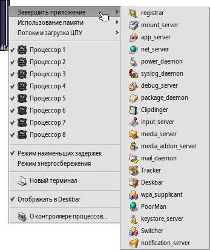
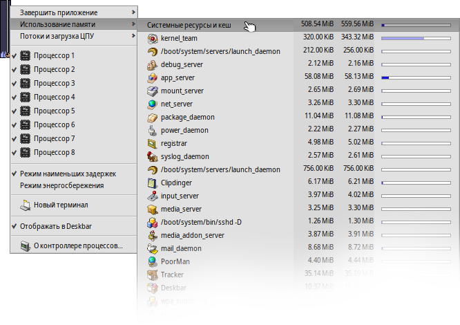

Русский
Русский Català
Català Deutsch
Deutsch English
English Español
Español Français
Français Italiano
Italiano Magyar
Magyar Polski
Polski Português
Português Português (Brazil)
Português (Brazil) Română
Română Slovenčina
Slovenčina Suomi
Suomi Svenska
Svenska 中文 ［中文］
中文 ［中文］ Українська
Українська 日本語
日本語 Контроллер процессов (ProcessController)
Контроллер процессов (ProcessController)
| Расположение в Deskbar: | ||
| Расположение в Tracker: | /boot/system/apps/ProcessController | |
| Настройки хранятся по адресу: | отсутствует |
Основная задача апплета Контроллер процессов - показать активность центрального процессора и объем использованной оперативной памяти. Он позволяет производить мониторинг отдельных команд, назначать им приоритет, а так же принудительно завершать их, если какая-то программа зависнет. В многопроцессорных средах Контроллер процессов позволяет отключить отдельные процессоры или ядра. Когда Tracker или Deskbar завершают свою работы из-за ошибки, вы можете перезапустить их командой из меню Контроллер процессов.
Индикаторы в левой части показывают использование каждого процессора, в то время как полоса в правой части показывает потребление оперативной памяти. Помните, что количество индикаторов зависит от количества процессоров/ядер в компьютере.
Если вы запустили Контроллер процессов впервые, апплет спросит вас, должен ли он работать в оконном режиме, либо находиться в трее Deskbar. В оконном режиме вы можете
изменять размер полосы-индикатора, меняя размер окна, после чего перетащить его на рабочий стол в виде Репликанта
Вне зависимости от режима функционирования апплета, управление им производится через контекстное меню, вызываемое правым кликом.
Для удаления апплета из трея Deskbar, снимите отметку напротив пункта в контекстном меню.
Завершить приложение
Для выхода из приложения выберите его имя в меню . Это такой же корректный способ, как и нажатие на кнопку закрытия в заголовке окна. Будьте аккуратны, при завершении работы таких процессов как серверы и демоны, их закрытие может привести к нестабильности работы системы.
Использование памяти
Мониторинг использования памяти может быть немного неточным.
Это меню позволяет оценить объем использованной приложениями памяти в вашей системе. За именем приложения следуют две колонки - объем зарезервированной записываемой памяти и объем памяти, доступной только для чтения (например, общие библиотеки).
В первой строке Системные ресурсы и кеш отображается суммарный объем памяти, использованный системой и всеми приложениями. Длина синей полоски зависит от объема физической памяти в вашем компьютере. Следующие строки показывают занятую память для каждого процесса. Обратите внимание, что длина полоски зависит только от части использованной памяти.
| Память используется только одним приложением (с доступом на запись) | ||
| Память, включая место только для чтения (может использоваться несколькими приложениями) |
Потоки и загрузка ЦПУ
Это меню позволяет менять приоритеты нитей, принудительно завершать программы, либо производить их отладку.
| Код ядра | ||
| Пользовательский код | ||
| Бездействие |
На первом уровне вы видите название программ. Кликнув по нему, вы принудительно завершите программу и все ее нити. Темно-синяя часть полосы обозначает время, затраченное на уровне ядра, светло-голубая - затраченное на уровне пользователя, зеленая часть - нить простоя. Полоса, полностью заполненная синим цветом, показывает процесс, полностью занимающий процессор.
На втором уровне показаны потоки, составляющие процессы. Кликнув по потоку вы можете перейти к его отладке, либо принудительно его завершить. Полоса, полностью заполненная синим цветом, обозначает поток, занимающий время одного процессора или ядра.
Последний уровень меню позволяет вам менять приоритеты нитей. Меняйте его с осторожностью! Как правило, приоритет нити должен быть обратен загрузке процессора: чем больше нити требуется процессорное время, тем ниже должен быть ее приоритет. А вообще, вместо того, чтобы меня приоритет, свяжитесь с автором программы - это его забота.